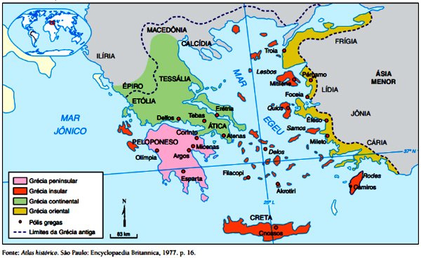
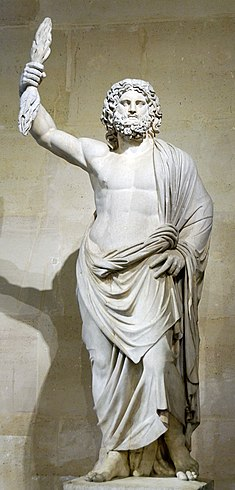

A Grécia Antiga que conhecemos como o berço da civilização ocidental, da democracia, do teatro ou onde viveram filósofos como Sócrates, Platão e Aristóteles, é muito diferente do país Grécia que conhecemos atualmente. Para os gregos antigos a relação com o território era muito diferente do nosso conceito atual, pois para eles onde havia um grego ali estaria a Grécia ou Hélade como chamavam. Ser grego ou heleno significava falar o grego, todos os que não falavam a língua, portanto, eram considerados bárbaros, palavra que deriva de “bar-bar-bar” ou balbucios incompreendido das línguas dos outros povos, forma etnocêntrica de tratar os demais povos que para os gregos antigos serviam apenas para os seguintes propósitos: comércio de metais e alimentos, pilhagem durante as guerras e a obtenção de mão-de-obra escravizada.
São muitas as diferenças entre a Grécia moderna e a Grécia Antiga. O mundo grego antigo estendia-se por uma área muito maior do que o território grego atual.
Além disso, há outra diferença básica. Hoje, a Grécia constitui um Estado, cujo nome oficial é "República Helênica". Já a Grécia Antiga nunca foi um Estado unificado com
governo único. Era um conjunto de cidades-Estado independentes entre si, com características próprias embora a maioria delas tivesse seus sistemas econômicos parecidos,
excluindo-se de Esparta.
Cidades-Estado
Desde o século VIII a.C., formaram-se pela Grécia Antiga diversas cidades independentes. Em razão disso, cada uma delas desenvolveu seu próprio sistema de governo, suas leis,
seu calendário, sua moeda. Cada uma dessas cidades era chamada de pólis, palavra grega que costuma ser traduzida por cidade-Estado. O conjunto de diversas pólis era chamado de
poleis.
De modo geral, a pólis reunia um agrupamento humano que habitava um território cuja extensão geralmente variava entre algumas centenas de quilômetros quadrados e 10.000 km².
Compreendia uma área urbana e outra rural. Atenas, por exemplo, tinha 2.500 km², Siracusa tinha 5.500 km² e Esparta se estendia por 7.500 km². A área urbana frequentemente
se estabelecia em torno de uma colina fortificada denominada acrópole (do grego akrós, alta e pólis, cidade). Nessa área concentrava-se o centro comercial e a manufatura. Ali,
muitos artesãos e operários produziam tecidos, roupas, sandálias, armas, ferramentas, artigos em cerâmica e vidro.
Na área rural a população dedicava-se às atividades agropastoris: cultivo de oliveiras, videiras, trigo, cevada e criação de rebanhos de cabras, ovelhas, porcos e cavalos.
Este agrupamento visava atingir e manter uma completa autonomia política e social para com as outras poleis gregas, embora existisse muito comércio e divisão de trabalho entre
as cidade gregas. É estimado que Atenas importava 2/3 a 3/4 de seus alimentos e exportava azeite, chumbo, prata, bronze, cerâmica e vinho. No mundo grego encontramos muitas
poleis, dentre as mais famosas, temos Messênia, Tebas, Mégara e Erétria. É estimado que seu número tenha chegado a mais de mil no século IV a.C..
A maioria das poleis gregas eram pequenas, com populações de aproximadamente 20 mil habitantes ou menos na sua área urbana. Contudo, as principais cidades eram bem maiores,
no século IV a.C., estando entre elas Atenas, com estimados 170 mil habitantes, Siracusa com aproximadamente 125 mil habitantes e Esparta com apenas 40 mil habitantes.
Atenas era a maior e mais rica cidade da Grécia Antiga durante os séculos V e IV a.C. Existem relatos da época que reportam um volume comercial externo (soma das importações e
exportações das cidades do império ateniense) da ordem de 180 milhões de dracmas áticos, valor duas ou três vezes superior ao orçamento do Império Aquemênida na mesma época.
Monarquia
A monarquia é uma forma de governo em que o poder está nas mãos de uma única pessoa. A maioria das monarquias foram governadas por reis, geralmente com a ajuda de um conselho
de assessores. A palavra monarquia vem dos termos gregos monos (que significa "um") e arkhein (que significa "regra"). Os Micénicos, quem governou a Grécia antiga de 2000 a
1100 a.C., eram povos guerreiros que estabeleceram monarquias para governar seus reinos. O rei de cada cidade-estado vivia em um palácio-fortaleza luxuoso na cidade capital.
Além da capital havia uma rede de aldeias periféricas. As pessoas dessas aldeias pagavam impostos ao rei, obedeciam as suas leis, e dependiam dele para a sua defesa.
O rei muitas vezes contou com soldados fortemente armados para impor seu domínio e garantir que as pessoas pagassem impostos e obedecessem suas leis. Ele geralmente mantinha
o seu poder político para a vida toda. Seu filho mais velho, o príncipe, sucedia-lhe no trono. Quando não havia sucessor masculino direto, os mais próximos conselheiros militares
do rei muitas vezes lutavam entre si para se tornar o novo monarca.
As monarquias micênicas sobreviveram até por volta do ano de 1 200 a.C. Naquela época, muitas de suas rotas comerciais orientais começaram a fechar por causa de combates entre
reinos da Ásia Menor. Como resultado, os micênicos já não podiam obter metais brutos, e sua capacidade de fabricar armas e conquistar outras terras diminuíram. Eventualmente,
os micênicos começaram a lutar entre si pela sobrevivência, e eles lentamente destruíram-se uns aos outros. Finalmente, um povo do noroeste chamado dórios invadiram a Grécia e
destruíram o que restava das monarquias micênicas. A Monarquia como forma de governo logo desapareceu na Grécia. Foi substituída por um sistema em que um pequeno número de indivíduos
partilhavam o poder e governavam como um grupo.
Oligarquia
Uma oligarquia é uma forma de governo em que o poder de decisão está nas mãos de poucos líderes. A palavra oligarquia vem dos termos gregos oligos (que significa "poucos") e
arkhein (que significa "regra"). Entre 1100 e 800 a.C., pequenos grupos de pessoas começaram a compartilhar o poder dominante em várias cidades-estados gregas. O poder político
foi muitas vezes compartilhado entre aristocratas, que herdavam a riqueza e o poder de suas famílias, e um rei. Com o tempo, esse arranjo de decisões mudou. As oligarquias se
desenvolveram de forma que o poder político ficava nas mãos de poucos indivíduos, ricos e selecionados. Alguns desses membros do círculo governante eram de nascimento
aristocrático, enquanto outros eram membros ricos da classe média. Como monarcas, oligarcas geralmente tinham vidas de luxo e faziam cumprir sua lei com o apoio militar.
Os cidadãos de uma oligarquia desfrutavam de certas proteções, embora eles não tinham plenos direitos políticos, como votar. Portanto, a maioria dos cidadãos de uma oligarquia
tinha muito pouco a dizer sobre como a cidade-estado era governada.
Com o tempo, as oligarquias começaram a desaparecer na Grécia por vários motivos. Em Corinto, por exemplo, as pessoas viviam bem, mas a oligarquia governava duramente e os
cidadãos eventualmente derrubaram-na. Em Atenas, a insatisfação com os oligarcas surgiu como o aumento da população camponesa e escassez de alimentos. O poder das oligarquias
também foi enfraquecido quando indivíduos poderosos e ricos reuniram exércitos de contratados, ou mercenários, guerreiros, chamados hoplitas, e os usou para intimidar os líderes
políticos. Até o ano 400 a.C., uma oligarquia estável governou apenas uma cidade-estado, Esparta.
Tirania
A tirania é uma forma de governo em que o poder de decisão está nas mãos de um indivíduo que tenha tomado o controle, muitas vezes por meios ilícitos. A palavra tirania vem
do grego tyrannos, que significa "usurpador com poder supremo". Com o tempo, a pessoa que governava através da tirania, ou um tirano, ficou conhecida como quem se agarra ao
poder por meios cruéis e abusivos.
As tiranias na Grécia surgiram pela primeira vez em meados do ano 600 a.C. Em muitas cidades-estados, uma crescente e rica classe média de comerciantes e fabricantes ficara
descontente com seus governantes. Essa classe média exigia privilégios políticos e sociais para acompanhar sua nova riqueza, mas as oligarquias dominantes recusavam-se a
conceder-lhes uma palavra a dizer no governo. Várias pessoas, na sua maioria ex-líderes militares, responderam às demandas da população de classe média e prometeram fazer
as mudanças que eles queriam. Apoiados pela classe média, esses indivíduos tomaram o poder dos grupos governantes. Uma vez no poder, esses líderes (ou tiranos) frequentemente
reformulavam as leis, a ajudavam os pobres, cancelavam dívidas, e davam aos cidadãos que não eram nobres uma voz no governo. Como recompensa, os cidadãos presenteavam os tiranos
com frequência, que por sua vez ficaram bastante ricos.
Muitos tiranos governaram por curtos períodos de tempo. Em algumas cidades-estado, os tiranos se tornaram duros e gananciosos, e foram simplesmente derrubados pelo povo.
O último tirano importante a governar a Grécia continental foi Hípias da cidade-estado de Atenas. Em 510 a.C. uma combinação de invasores espartanos e atenienses, que se
opunham ao seu governo severo, forçaram Hípias a demitir-se e deixar a Grécia. Uma nova forma de governo, em que todos os cidadãos compartilhavam tomadas de decisão,
eventualmente o substituiu.
Democracia
A democracia é uma forma de governo em que o poder está nas mãos de todas as pessoas. A palavra democracia vem do termo grego demos (que significa "povo") e kratos (que significa "poder").
A democracia se desenvolveu na Grécia antiga por volta de 500 a.C na cidade-estado de Atenas, onde muitas pessoas começaram a opor-se a regra dos tiranos. O órgão principal da democracia ateniense era a Assembleia dos cidadãos. A Assembleia foi aberta a todos os 30.000 a 40.000 cidadãos adultos do sexo masculino, mas geralmente apenas 5.000 pessoas compareciam. Tanto os cidadãos ricos e pobres participavam da Assembleia. Este órgão se reunia cerca de 40 vezes por ano para dirigir a política externa, rever as leis e aprovar ou condenar a conduta dos funcionários públicos. Membros da Assembleia chegavam a todas as suas decisões através do debate público e do voto.
Um órgão executivo menor mas não menos importante , o Conselho dos 500, foi o responsável pelo dia-a-dia de funcionamento do Estado. Esse corpo, cujos membros eram escolhidos anualmente em um tipo de "loteria", propunha leis e decisões da Assembleia pela força ou decretos. O Conselho também administrou as finanças do Estado, recebeu embaixadores estrangeiros, e supervisionou a manutenção da frota de navios ateniense.
Um aspecto importante da democracia ateniense era o fato de que os seus funcionários públicos não tinham muito poder individual. Não houve tal posse como um presidente de Atenas. Em tempos de guerras, um grupo seleto de generais tomavam decisões sobre assuntos militares. Esses generais foram eleitos anualmente e poderiam ser reeleitos várias vezes. Quase todos os funcionários do governo, incluindo generais e os membros do conselho, bem como os cidadãos que serviram em júris foram pagos por seus serviços. Isso permitiu que cidadãos do sexo masculino, tanto ricos e pobres a participassem plenamente no governo ateniense.
A economia grega se baseava em produtos artesanais, a agricultura e o comércio. Os gregos faziam produtos em coro, metal e tecidos. Estes davam muito trabalho, pois todas as etapas de produção desde a fiação até o tingimento eram demoradas. Os cultivos estavam dedicados às vinhas, oliveiras e trigo. A isto somavam-se à criação de animais de pequeno porte. O comércio estava presente e afetava toda sociedade grega. Para realizar as trocas comercais se usava a moeda "dracma".
Os gregos praticavam um culto politeísta antropomórfico, em que os deuses poderiam se envolver em aventuras fantásticas, tendo, também, a participação de heróis (Hércules, Teseu, Perseu, Édipo) que eram considerados divinos. Não havia dogmas e os deuses possuíam tanto virtudes quanto defeitos, o que os assemelhava aos mortais no aspecto de personalidade. Para relatar os feitos dos deuses e dos heróis, os gregos criaram uma rica mitologia.
Normalmente, as cerimônias públicas, mesmo de cunho político, eram antecedidas por práticas religiosas, o que reflete a importância da religião entre os gregos antigos. Mas essa religião foi superada pela filosofia.
Apesar da autonomia política das cidades-estados, os gregos estavam unificados em termos religiosos. Entre as divindades cultuadas estavam: Zeus (senhor dos deuses e céus), Hades (deus do Mundo Inferior e dos mortos), Deméter (deusa da agricultura), Poseidon (deus dos mares), Afrodite (deusa do amor e beleza), Apolo (deus do sol, da música, da medicina, da poesia, do tiro com arco e dos solteiros), Dioniso (deus do vinho), Atena (deusa da sabedoria e da guerra), Ártemis (deusa da caça e da lua), Hermes (deus dos ladrões, dos viajantes, dos comerciantes e dos mensageiros), Hera (protetora das mulheres, deusa do casamento e da maternidade e esposa de Zeus), Ares (deus da guerra), Hefesto (deus dos ferreiros).
Além dos grandes santuários como os de Delfos, Olímpia e Epidauro, havia os oráculos que também recebiam grandes multidões, pois lá se acreditava receber mensagens diretamente dos deuses. Um exemplo claro estava no Oráculo de Delfos, onde uma pitonisa (sacerdotisa do templo de Apolo) entrava em transe e pronunciava palavras sem nexo que eram interpretadas pelos sacerdotes, revelando o futuro dos peregrinos.
Outro fato muito interessante era a existência dos homogloditas, um pequeno povo que vivia nas áreas litorâneas do mediterrâneo, eles utilizavam a argila para a construção de estatuetas como uma oferenda aos deuses gregos, geralmente ao Dioniso, deus do vinho e das festas.
Período Pré-Homérico (séculos XX - XII a.C.)
A Grécia antiga se formou da miscigenação dos povos Indo-Europeus ou arianos (aqueus, jônios, eólios, dórios). Eles migraram para a região situada no sul da península Balcânica, entre os mares Jônico, Mediterrâneo e Egeu.
Acredita-se que por volta de 2000 a.C. chegaram os aqueus, que viviam num regime de comunidade primitiva.
Depois de estabelecerem contato com os cretenses, de quem adotaram a escrita, se desenvolveram, construíram palácios e cidades fortificadas.
Organizaram-se em vários reinos liderados pela cidade de Micenas. Daí o nome Civilização Aqueia de Micenas.
Depois de aniquilarem a civilização cretense, dominaram várias ilhas do Mar Egeu. Destruíram Troia, cidade rival.
Porém, no século XII a.C. foi destruída pelos dórios, que impuseram um violento domínio sobre toda a região, arrasaram as cidades da Hélade e provocaram a dispersão da população, o que favoreceu a formação de várias colônias. Este fato é conhecido como a 1ª diáspora grega.

Mapa da Grécia Antiga
Período Homérico (séculos XII - VIII a.C.)
As invasões dóricas provocaram um retrocesso das relações sociais e comerciais entre os gregos.
Em algumas regiões surgiram o genos – comunidade formada por numerosas famílias, descendentes de um mesmo ancestral.
Nessas comunidades, os bens eram comuns a todos, o trabalho era coletivo, criavam gado e cultivavam a terra.
Tudo era dividido entre eles, que dependiam das ordens do chefe comunitário, chamado Pater, que exercia funções religiosas, administrativas e jurídicas.
Com o aumento da população e o desequilíbrio entre a população e o consumo, os genos começaram a desagregar.
Muitos começaram a deixar o genos e procurar melhores condições de sobrevivência, iniciando o movimento colonizador por boa parte do Mediterrâneo.
Esse movimento que marca a desintegração do sistema gentílico é chamado de 2ª diáspora grega.
Esse processo resultou na fundação de diversas colônias, entre elas:
Bizâncio, mais tarde Constantinopla, e atual Istambul;
Marselha e Nice, hoje na França;
Nápoles, Tarento, Síbaris, Crotona e Siracusa, conhecidas em conjunto como Magna Grécia, no sul da atual Itália e na Sicília.
Período Arcaico (séculos VIII - VI a.C.)
O Período Arcaico se inicia com a decadência da comunidade gentílica. Nesse momento, os aristocratas resolvem se unir criando as frátrias (irmandades formadas por indivíduos de vários genos).
Estas se uniram formando tribos. As tribos construíram, em terrenos elevados, as cidades fortificadas chamadas acrópoles. Estavam nascendo as cidades – Estados (pólis) gregas.
Atenas e Esparta serviram de modelo para as demais polis grega Esparta era uma cidade aristocrática, fechada às influências estrangeiras e uma cidade agrária.
Os espartanos valorizavam a autoridade, a ordem e a disciplina. Tornou-se um Estado militarista e foi uma cidade de escassa realização intelectual.
Por sua vez, Atenas dominou durante muito tempo o comércio entre gregos e, em sua evolução política, conheceu várias formas de governo: monarquia, oligarquia, tirania e democracia.
Atenas simbolizou o esplendor cultural da Grécia Antiga.
Período Clássico (séculos V - IV a.C.)
O início do Período Clássico foi marcado pelas Guerras Médicas, entre as cidades gregas e os persas, que ameaçavam o comércio e a segurança das pólis.
Após as guerras, Atenas tornou-se líder da Confederação de Delos, uma organização composta por várias cidades-Estados. Estas deviam contribuir com navios e dinheiro para manter a resistência naval contra uma possível invasão estrangeira.
O período da hegemonia ateniense coincidiu com a prosperidade econômica de Atenas, com o esplendor cultural da Grécia. Nesta época, a filosofia, o teatro, a escultura e a arquitetura atingiram sua maior grandeza.
Pretendendo impor também sua hegemonia no mundo grego, Esparta compôs com outras cidades-Estados a Liga do Peloponeso e declarou guerra a Atenas em 431 a.C. Depois de 27 anos de lutas, Atenas foi derrotada.
Anos mais tarde, Esparta perdeu a hegemonia para Tebas e durante esse período a Grécia foi conquistada pelos exércitos da Macedônia.
O período no qual os gregos estiveram sob o domínio do Império Macedônico, ficou conhecido como período helenístico.
Grécia foi governada pelo imperador Felipe II e em seguida por seu filho Alexandre Magno, que conquistou um grande império. A fusão da cultura grega com a ocidental recebeu o nome de Cultura Helenística.
A cultura da Grécia Antiga é considerada a base da cultura da civilização ocidental. A cultura grega exerceu poderosa influência sobre os romanos, que se encarregaram de repassá-la a diversas partes da Europa. A civilização grega antiga teve influência na linguagem, na política, no sistema educacional, na filosofia, na ciência, na tecnologia, na arte e na arquitectura moderna, particularmente durante a renascença da Europa ocidental e durante os diversos reviveres neoclássicos dos séculos XVIII e XIX, na Europa e Américas.
Conceitos como cidadania e democracia são gregos, ou pelo menos de pleno desenvolvimento na mão dos gregos. Qualquer história da Grécia Antiga requer cautela na consulta a fontes. Os historiadores e escritores políticos cujos trabalhos sobreviveram ao tempo eram, em sua maioria, atenienses ou pró-atenienses.
Por isso se conhece melhor a história de Atenas do que a história das outras cidades; além disso, esses homens concentraram seus trabalhos mais em aspectos políticos (e militares e diplomáticos, desdobramentos daqueles), ignorando o que veio a se conhecer modernamente por história econômica e social. Toda a história da Grécia antiga precisa dar atenção à condução parcial pelas fontes.

Estátua de Zeus, Deus grego do raio e pai dos deuses.